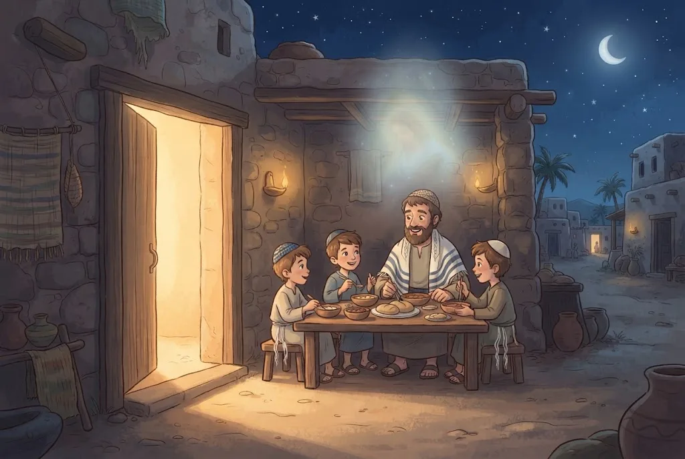

🌙חַג הַמַּצּוֹת וְחַג הַפֶּסַח
לֶחָג יֵשׁ שְׁנֵי שֵׁמוֹת בַּתּוֹרָה. ״חַג הַמַּצּוֹת״ – כְּנֶגֶד הָאֱמוּנָה: הַמַּצָּה מַזְכִּירָה שֶׁה׳ נִגְלָה וְגָאַל אוֹתָנוּ לִפְנֵי שֶׁהַבָּצֵק הִסְפִּיק לְהַחְמִיץ. ״חַג הַפֶּסַח״ – כְּנֶגֶד סְגֻלַּת יִשְׂרָאֵל: בְּמַכַּת בְּכוֹרוֹת ה׳ פָּסַח עַל בָּתֵּי יִשְׂרָאֵל.
שְׁנֵי הַשֵּׁמוֹת הֵם שְׁנֵי פָּנִים שֶׁל דָּבָר אֶחָד: שֵׁם ה׳ מִתְגַּלֶּה בָּעוֹלָם עַל יְדֵי עַם יִשְׂרָאֵל.
💛 אַהֲבַת הַשֵּׁם: ״עַם זוּ יָצַרְתִּי לִי, תְּהִלָּתִי יְסַפֵּרוּ״. ה׳ בָּחַר בָּנוּ – וַאֲנַחְנוּ מְסַפְּרִים אֶת שְׁבָחוֹ לְכָל הָעוֹלָם.
🕊️זְמַן חֵרוּתֵנוּ
עַמִּים שֶׁנִּצְּחוּ אֶת מִי שֶׁשִּׁעְבֵּד אוֹתָם הָיוּ הוֹפְכִים אוֹתוֹ לְעֶבֶד. יִשְׂרָאֵל לֹא עָשׂוּ כָּךְ: גַּם אַחֲרֵי שֶׁהַמִּצְרִים הֻכּוּ, הֵם רַק יָצְאוּ לְחֵרוּת. לָכֵן פֶּסַח נִקְרָא ״חַג הַחֵרוּת״, וּבַתְּפִלָּה אוֹמְרִים ״זְמַן חֵרוּתֵנוּ״.
כְּשֶׁהַתּוֹרָה מְצַוָּה עַל בֵּין אָדָם לַחֲבֵרוֹ, הִיא מַזְכִּירָה אֶת מִצְרַיִם: ״וְגֵר לֹא תִלְחָץ... כִּי גֵרִים הֱיִיתֶם בְּאֶרֶץ מִצְרָיִם״.
💛 אַהֲבַת הַשֵּׁם: מִי שֶׁסָּבַל יוֹדֵעַ כַּמָּה כּוֹאֵב לִסְבֹּל. ה׳ רוֹצֶה שֶׁנִּזְכֹּר אֶת זֶה, וְנִהְיֶה טוֹבִים לְכָל מִי שֶׁחַלָּשׁ.
🏜️הָרוּחַ יוֹצֵאת לְחֵרוּת
מִצְרַיִם הָיְתָה אֻמָּה שֶׁהֶאֱמִינָה רַק בַּגּוּף וּבַחֹמֶר. הַמִּצְרִים חָשְׁבוּ שֶׁהָאָדָם הוּא רַק הַגּוּף שֶׁלּוֹ, וְלָכֵן בָּנוּ פִּירָמִידוֹת עֲנָקִיּוֹת – בָּתֵּי קְבָרוֹת מְפֹאָרִים לַגּוּף. יְצִיאַת מִצְרַיִם הִיא יְצִיאַת הָרוּחַ לְחֵרוּת מִכַּבְלֵי הַחֹמֶר.
לָכֵן זוֹכְרִים אֶת יְצִיאַת מִצְרַיִם בְּכָל יוֹם וּבְכָל לַיְלָה – כִּי עֲדַיִן צְרִיכִים לְהִשְׁתַּחְרֵר מִכַּבְלֵי הַיֵּצֶר וְהַתַּאֲווֹת.
💛 אַהֲבַת הַשֵּׁם: הַנְּשָׁמָה שֶׁלָּנוּ הִיא חֵלֶק מִמַּעַל. כְּשֶׁאָנוּ מִתְגַּבְּרִים עַל הַיֵּצֶר, אָנוּ יוֹצְאִים שׁוּב מִמִּצְרַיִם – וּמִתְקָרְבִים אֶל ה׳.
💪״כֵּן יִרְבֶּה וְכֵן יִפְרֹץ״
כְּכָל שֶׁהַמִּצְרִים שִׁעְבְּדוּ אֶת יִשְׂרָאֵל יוֹתֵר, כָּךְ יִשְׂרָאֵל הִתְרַבּוּ יוֹתֵר: ״וְכַאֲשֶׁר יְעַנּוּ אֹתוֹ כֵּן יִרְבֶּה וְכֵן יִפְרֹץ״. עַד שֶׁהָיוּ שִׁשִּׁים רִבּוֹא, וְאָז יָצְאוּ מִמִּצְרַיִם לְקַבֵּל אֶת הַתּוֹרָה בְּסִינַי.
יִשְׂרָאֵל יָצְאוּ עִם רְכוּשׁ רַב – שָׂכָר עַל שְׁנוֹת הָעַבְדוּת. כָּךְ נַעֲשָׂה דִּין צֶדֶק בַּמִּצְרִים.
💛 אַהֲבַת הַשֵּׁם: גַּם בַּזְּמַנִּים הַקָּשִׁים ה׳ שׁוֹמֵר עַל עַמּוֹ. מָה שֶׁנִּרְאֶה כְּמוֹ צָרָה הָפַךְ לְבָסִיס חָזָק לַגְּאֻלָּה.
🎈הֶחָמֵץ הַתּוֹפֵחַ וְהַמַּצָּה הַדַּקָּה
הַזֹּהַר אוֹמֵר שֶׁהֶחָמֵץ רוֹמֵז לְיֵצֶר הָרָע – לַגַּאֲוָה. הַבָּצֵק תּוֹפֵחַ וּמִתְנַפֵּחַ, כְּמוֹ אָדָם גַּאַוְתָן שֶׁמַּגְדִּיל אֶת עַצְמוֹ. הַמַּצָּה נִשְׁאֶרֶת דַּקָּה, כְּמוֹ שֶׁה׳ בָּרָא אוֹתָהּ – וְהִיא רוֹמֶזֶת לָעֲנָוָה.
בְּפֶסַח אָנוּ עוֹסְקִים בְּיִסּוֹדוֹת הָאֱמוּנָה, וְלָכֵן מִתְרַחֲקִים מִכָּל שֶׁמֶץ שֶׁל חָמֵץ – בַּמַּאֲכָלִים וּבַבַּיִת.
💛 אַהֲבַת הַשֵּׁם: בְּפֶסַח אֲנַחְנוּ עוֹמְדִים לִפְנֵי ה׳ בַּעֲנָוָה וְזוֹכְרִים שֶׁהַכֹּל מִמֶּנּוּ – הַחַיִּים, הַתּוֹרָה וְהַבְּחִירָה בְּעַם יִשְׂרָאֵל.
⚖️חָמֵץ – טוֹב כָּל הַשָּׁנָה
אִם הֶחָמֵץ רוֹמֵז לְגַאֲוָה, לָמָּה אוֹכְלִים אוֹתוֹ כָּל הַשָּׁנָה? כִּי ה׳ נָתַן לָאָדָם חָכְמָה לְשַׁכְלֵל אֶת הָעוֹלָם – לֶאֱפוֹת עוּגוֹת, לְפַתֵּחַ מַדָּע וְטֶכְנוֹלוֹגְיָה. זֶה טוֹב! אֲבָל בְּפֶסַח עוֹסְקִים בְּיִסּוֹדוֹת הָאֱמוּנָה, וְאוֹתָם אֲנַחְנוּ מְקַבְּלִים מִה׳ – לֹא מַמְצִיאִים.
יֵשׁ גַּאֲוָה שֶׁפְּסוּלָה כָּל הַשָּׁנָה: לַחְשֹׁב שֶׁאֲנִי חָכָם וּמֻצְלָח יוֹתֵר מִמָּה שֶׁאֲנִי. וְיֵשׁ גַּאֲוָה כְּלַפֵּי ה׳ – לְעָרֵב מַחְשָׁבוֹת שֶׁל בְּנֵי אָדָם בְּיִסּוֹדוֹת הָאֱמוּנָה – וְהִיא כְּמוֹ חָמֵץ בְּפֶסַח.
💛 אַהֲבַת הַשֵּׁם: ה׳ נוֹתֵן לָנוּ כֹּחַ לִבְנוֹת וּלְשַׁפֵּר אֶת הָעוֹלָם, וְגַם מְלַמֵּד אוֹתָנוּ לִזְכֹּר מִי בָּרָא אוֹתוֹ. כָּךְ הַחָכְמָה וְהָעֲנָוָה הוֹלְכוֹת יַחַד.

🫓לֶחֶם הָאֱמוּנָה
בַּזֹּהַר הַמַּצָּה נִקְרֵאת ״מֵיכְלָא דִּמְהֵימְנוּתָא״ – לֶחֶם הָאֱמוּנָה. כְּשֶׁאוֹכְלִים אוֹתָהּ בְּלֵיל הַסֵּדֶר בְּכַוָּנָה, זוֹכִים לֶאֱמוּנָה, וּכְשֶׁאוֹכְלִים אוֹתָהּ בְּכָל שִׁבְעַת הַיָּמִים, מַשְׁרִישִׁים אֶת הָאֱמוּנָה בַּלֵּב.
מִי שֶׁמְּכַבֵּד אֶת הַחַגִּים רַק כְּ״מָסֹרֶת יָפָה״ שֶׁבְּנֵי אָדָם הִמְצִיאוּ, וְשׁוֹכֵחַ שֶׁה׳ צִוָּה עֲלֵיהֶם – חָסֵר לוֹ הָעִקָּר.
💛 אַהֲבַת הַשֵּׁם: הַחַגִּים אֵינָם הַמְצָאָה שֶׁל בְּנֵי אָדָם: ה׳ בָּחַר בָּנוּ, נָתַן לָנוּ אֶת תּוֹרָתוֹ וְצִוָּה אוֹתָנוּ לַחֲגֹג. זֶה מָה שֶׁהוֹפֵךְ כָּל מַצָּה לְמִצְוָה.
📚שְׁלוֹשִׁים יוֹם לִפְנֵי פֶּסַח
שׁוֹאֲלִים וְדוֹרְשִׁים בְּהִלְכוֹת פֶּסַח שְׁלוֹשִׁים יוֹם לִפְנֵי הֶחָג – כְּלוֹמַר מִפּוּרִים. כָּךְ לָמַדְנוּ מִמֹּשֶׁה רַבֵּנוּ, וּבִימֵי הַמִּקְדָּשׁ הָיוּ מְכִינִים בַּיָּמִים הָאֵלֶּה אֶת קָרְבְּנוֹת הַפֶּסַח. וְהִלְכוֹת פֶּסַח רַבּוֹת: הַכְשָׁרַת הַבַּיִת, בְּדִיקַת חָמֵץ, אֲפִיַּת מַצּוֹת וְלֵיל הַסֵּדֶר.
רָאוּי שֶׁגַּם בְּבָתֵּי הַסֵּפֶר וּבַיְשִׁיבוֹת יִלְמְדוּ הִלְכוֹת פֶּסַח בִּשְׁלוֹשִׁים הַיָּמִים הָאֵלֶּה.
💛 אַהֲבַת הַשֵּׁם: מִי שֶׁמְּחַכֶּה לְאוֹרֵחַ חָשׁוּב מַתְחִיל לְהִתְכּוֹנֵן מֻקְדָּם. כָּךְ אֲנַחְנוּ מִתְכּוֹנְנִים לְפֶסַח – בְּלִמּוּד וּבְשִׂמְחָה.
🧠 בְּדֹק אֶת עַצְמְךָ
לֶחָג יֵשׁ שְׁנֵי שֵׁמוֹת: ״חַג הַמַּצּוֹת״ וְ״חַג הַפֶּסַח״. כְּנֶגֶד מָה הֵם?
💡 חַג הַמַּצּוֹת – ה׳ נִגְלָה וְגָאַל אוֹתָנוּ, וְזוֹ הָאֱמוּנָה. חַג הַפֶּסַח – ה׳ פָּסַח עַל בָּתֵּי יִשְׂרָאֵל, וְזוֹ סְגֻלַּת יִשְׂרָאֵל. וּשְׁנֵיהֶם יַחַד: שֵׁם ה׳ מִתְגַּלֶּה עַל יְדֵי יִשְׂרָאֵל.
בַּמָּה הָיְתָה יְצִיאַת מִצְרַיִם שׁוֹנָה מִנִּצְחוֹנוֹת שֶׁל עַמִּים אֲחֵרִים?
💡 כָּל הָעַמִּים, כְּשֶׁגָּבְרוּ עַל מִי שֶׁשִּׁעְבֵּד אוֹתָם, שִׁעְבְּדוּ אוֹתוֹ. יִשְׂרָאֵל רַק יָצְאוּ לְחֵרוּת – וְכָךְ הִתְגַּלָּה לָרִאשׁוֹנָה בָּעוֹלָם רַעְיוֹן הַחֵרוּת.
לָמָּה בָּנוּ הַמִּצְרִים פִּירָמִידוֹת עֲנָקִיּוֹת?

💡 הַמִּצְרִים לֹא הֶאֱמִינוּ בַּנְּשָׁמָה. הֵם חָשְׁבוּ שֶׁהָאָדָם הוּא רַק הַגּוּף, וְלָכֵן חָנְטוּ אֶת הַמֵּתִים וּבָנוּ לָהֶם קְבָרִים מְפֹאָרִים. יְצִיאַת מִצְרַיִם הִיא שִׁחְרוּר הָרוּחַ מִן הַחֹמֶר.
📚 עוֹד חָמְרֵי לִמּוּד עַל הֲלָכָה – חִנָּם, בַּמַּאֲגָר הַקּוֹל הַחֲמִישִׁי:
kol-toda.co.il/halacha
הַמַּאֲגָר הַמָּלֵא: kol-toda.co.il
הַמַּאֲגָר הַמָּלֵא: kol-toda.co.il